Shading tab
The Shading tab illuminates and colors the particles in a scene. This behavior simulates the shading that comes from lighting effects. Without Shading turned on, there really isn't any lighting at all. All of the particles just take on a uniformly lit appearance.
The appearance of Shading is affected by the particles' proximity to the Shading Lights group, which provides up to eight built-in lights. There is also a Shadowlet Settings group that provides a soft self-shadowing for the particle volume.
NOTE: As, mentioned, Particular has its own set of eight internal lights. Nuke's Light nodes do not by default interact with Particular in any way. If you want the lights in Particular to appear the same in the 3D scene, you need to use expressions to link the Shading Lights properties (like Position, Rotation and Color) to the lights in the Nuke scene. We have information about expressions on the 3D Nuke page.
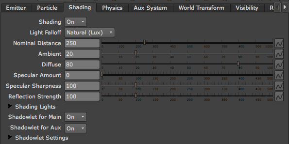
The Shading tab.
Shading pop-up
As you may expect, this pop-up turns on/off the calculation of shading from lights in the scene. By default, Shading is inactive
with the Off option. Switch on the Shading group by setting Shading to On. The Shading group needs to work with Shading Lights.
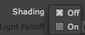
IMPORTANT: If there are no Lights in your Timeline, when you first turn on the Shading group, the particles will seem to disappear. Also, if Shading Lights> Ambient Color is set to black, you may have difficulty seeing the lighting effect.
Test the Shading: Add two Point or Spot Lights. Rotate one Light towards the particles and one away from the particles. Keep at least one light a white color. This is a great way to see how the Shading properties work.
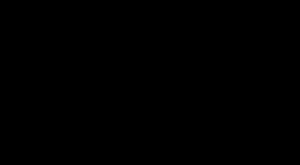 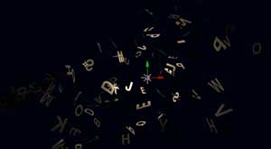
At left: Shading set to Off. All particles are colored based on the Particle> Color setting.
In middle: Shading set to On without a Light node. The scene goes black because Particular cannot calculate Shading without a Light.
At right: Shading set to On and a Light added. Particular shows the coloring of the particles based on their proximity to the Light.
Light Falloff pop-up
Determines how the shading is calculated from the Light group values.
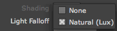
There are two Light Falloff options.
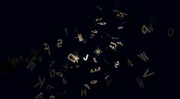 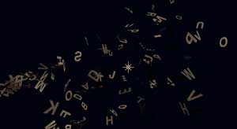
Left to right, Light Falloff set to Natural (Lux) and None.
Nominal Distance
Active when Light Falloff> Natural (Lux) is selected. Nominal Distance defines the distance, measured in pixels, at which the Light has its original Intensity and where the light fall off begins.
For example, if a Light has a Light Intensity value of 100% and a Nominal Distance value of 250, the particles with a distance 250 pixels of less from the light will all have a value of 100%. As the particles are positioned further away from the light than the nominal distance the Light intensity will decrease causing the particles to appear progressively dimmer.
Ambient
The Ambient value defines how much ambient light the particles will reflect. The Ambient light is a background light that is everywhere and radiates in every direction. Ambient is useful for adding illumination to the particles in the shadows, where there may be no illumination from the Light Falloff> Natural (Lux) mode.
For the Ambient value to show any result, there needs to be an Ambient Light in the Node Graph. The default value is 20. High values make the ambient light color and intensity dominant in the scene, making it look more like the Light Falloff > None option. Low values make the light contribution visible.
NOTE: The default Ambient Color is black. If you don't see a result when first using Ambient, go to the Shading Lights group and change the Ambient Color color to white.
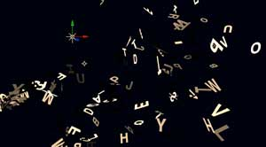 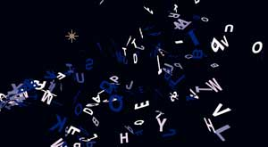 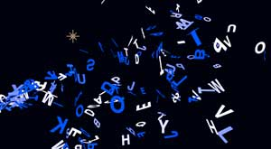
At left, a Point Light in the scene.
In middle, a Point Light and a blue Ambient Light with low Ambient value.
At right,
a Point Light and a blue Ambient Light with high Ambient value.
Diffuse
Defines how much the particles reflect the light in a diffuse manner. In the real world, diffuse light would be light that has passed through a translucent or sheer fabric, or bounced off of a white wall. Diffuse light is indirect lighting that has scattered from a surface. This gives the light a softer appearance than direct light with less shininess. This does not tie into any particular Light but instead affects all Lights in the composition.
The default value is 80. High values make the light(s) contribution brighter and causes particles closer to the lights in the Natural model to have a more uniform color and intensity. Low values result in the light color and intensity having a dim, soft appearance. Matte surfaces typically have a large diffuse component.
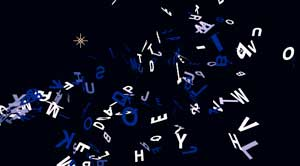
At left, low Diffuse value. At right, high Diffuse value.
Specular Amount
Simulates a hot spot created by the light shining directly back at the viewer like from a metallic or glossy surface. The values defines how much the particles reflect the light in the direction of the camera. For example, a glossy surface like plastic or metal has a large specular component.
High values make the particles appear more glossy, and particles even somewhat distant from the light object appear to be brightly illuminated. At low values, the particles will look less glossy, and the particles very close to the light object will appear to be brightly illuminated.
You may need to lower the Diffuse value to allow more of the the glimmer to show through. The specular appearance is very sensitive to the angle of the particle.
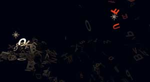 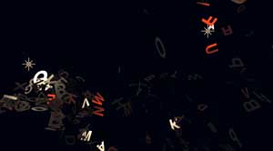
Left to right, low and high Specular Amount.
Specular Sharpness
Defines how narrow the specular reflection is. For example, a glass surface may have a very narrow angle of reflection, while a plastic surface may be slightly less narrow. Specular Sharpness lets you lower the sensitivity of Specular Amount so it is not so sensitive to the angle of the particle.
High values make the specularity more sensitive, and more particles will reflect light back to the camera. Low values make the specularity less sensitive and fewer particles will reflect light back to the camera.
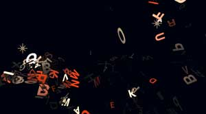 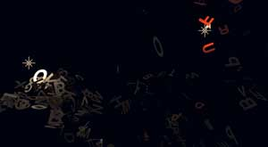
At left, high Specular Amount and high Specular Sharpness.
At right, high Specular Amount and low Specular Sharpness.
Reflection Strength
Defines how much the Reflection Map image contributes to the particle shading. Active when Shading is On and the Particle Type is either Sprite or Textured Polygons. To set the Reflection Map, use the Reflection Map input port.
Since the Reflection Map can be combined with the regular shading from Lights, this is useful for adjusting the overall balance of particle color between the Light(s) and the Reflection Map.
At a value of 100, the Reflection Map is fully on and the particles will pick up color based on the map's color and brightness. At lower values, the strength of the Reflection Map is lowered and mixed into the shading from the scene. Values greater than 100 increase the brightness of the Reflection Map node, making it appear as though it is lighting the scene. Very high values will simply make the particles appear white with no specific coloration.
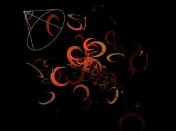 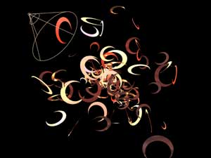
At left, Reflection Map loaded and low Reflection Strength. At right, Reflection Map loaded and high Reflection Strength.